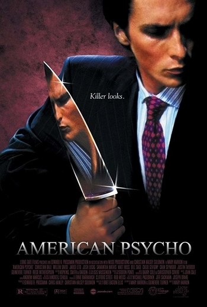

Кристиан Бейл
- дата рождения: 30 января 1974 г.
- полных лет: 50
- в скольких фильмах снялся: 134 (по информации Кинопоиска)
- жанры фильмов, в которых снимался: драма, боевик, триллер (по версии Кинопоиска)
Лучшие фильмы
Престиж
Тёмный рыцарь

Ford против Ferrari

Американский психопат
Машинист
Боец
Игра на понижение

Тёмный рыцарь: Возрождение легенды

Дополнительная информация
Интересный факт
Для съёмок в "Машинисте", Кристиан Бейл сбросил около 30 килограммов за четыре месяца.

Оскары
Кристиан Бейл был номинирован на "Оскар" 4 раза, но получил его всего единожды: за фильм "Боец".

Фильмография
| Год | Русское название | Оригинальное название | Роль |
|---|---|---|---|
| 2002 | Эквилибриум | Equilibrium | Клерик Джон Престон |
| 2004 | Машинист | The Machinist | Тревор Резник |
| 2006 | Престиж | The Prestige | Альфред |
| 2008 | Тёмный рыцарь | The Dark Knight | Брюс Уэйн / Бэтмен |
| 2010 | Боец | The Fighter | Дик Эклунд |
| 2019 | Ford против Ferrari | Ford v. Ferrari | Кен Майлз |